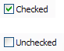

| Version: 2.9.4 |
#include </home/zeitlin/src/wx/github/interface/wx/checkbox.h>
 Inheritance diagram for wxCheckBox:
Inheritance diagram for wxCheckBox:A checkbox is a labelled box which by default is either on (checkmark is visible) or off (no checkmark).
Optionally (when the wxCHK_3STATE style flag is set) it can have a third state, called the mixed or undetermined state. Often this is used as a "Does Not Apply" state.
This class supports the following styles:
The following event handler macros redirect the events to member function handlers 'func' with prototypes like:
Event macros for events emitted by this class:
wxEVT_COMMAND_CHECKBOX_CLICKED event, when the checkbox is clicked. |  |  |  |
| wxMSW appearance | wxGTK appearance | wxMac appearance |
Public Member Functions | |
| wxCheckBox () | |
| Default constructor. | |
| wxCheckBox (wxWindow *parent, wxWindowID id, const wxString &label, const wxPoint &pos=wxDefaultPosition, const wxSize &size=wxDefaultSize, long style=0, const wxValidator &validator=wxDefaultValidator, const wxString &name=wxCheckBoxNameStr) | |
| Constructor, creating and showing a checkbox. | |
| virtual | ~wxCheckBox () |
| Destructor, destroying the checkbox. | |
| bool | Create (wxWindow *parent, wxWindowID id, const wxString &label, const wxPoint &pos=wxDefaultPosition, const wxSize &size=wxDefaultSize, long style=0, const wxValidator &validator=wxDefaultValidator, const wxString &name=wxCheckBoxNameStr) |
| Creates the checkbox for two-step construction. | |
| virtual bool | GetValue () const |
| Gets the state of a 2-state checkbox. | |
| wxCheckBoxState | Get3StateValue () const |
| Gets the state of a 3-state checkbox. | |
| bool | Is3State () const |
| Returns whether or not the checkbox is a 3-state checkbox. | |
| bool | Is3rdStateAllowedForUser () const |
| Returns whether or not the user can set the checkbox to the third state. | |
| bool | IsChecked () const |
| This is just a maybe more readable synonym for GetValue(): just as the latter, it returns true if the checkbox is checked and false otherwise. | |
| virtual void | SetValue (bool state) |
| Sets the checkbox to the given state. | |
| void | Set3StateValue (wxCheckBoxState state) |
| Sets the checkbox to the given state. | |
| wxCheckBox::wxCheckBox | ( | ) |
Default constructor.
| wxCheckBox::wxCheckBox | ( | wxWindow * | parent, |
| wxWindowID | id, | ||
| const wxString & | label, | ||
| const wxPoint & | pos = wxDefaultPosition, |
||
| const wxSize & | size = wxDefaultSize, |
||
| long | style = 0, |
||
| const wxValidator & | validator = wxDefaultValidator, |
||
| const wxString & | name = wxCheckBoxNameStr |
||
| ) |
Constructor, creating and showing a checkbox.
| parent | Parent window. Must not be NULL. |
| id | Checkbox identifier. The value wxID_ANY indicates a default value. |
| label | Text to be displayed next to the checkbox. |
| pos | Checkbox position. If wxDefaultPosition is specified then a default position is chosen. |
| size | Checkbox size. If wxDefaultSize is specified then a default size is chosen. |
| style | Window style. See wxCheckBox. |
| validator | Window validator. |
| name | Window name. |
| virtual wxCheckBox::~wxCheckBox | ( | ) | [virtual] |
Destructor, destroying the checkbox.
| bool wxCheckBox::Create | ( | wxWindow * | parent, |
| wxWindowID | id, | ||
| const wxString & | label, | ||
| const wxPoint & | pos = wxDefaultPosition, |
||
| const wxSize & | size = wxDefaultSize, |
||
| long | style = 0, |
||
| const wxValidator & | validator = wxDefaultValidator, |
||
| const wxString & | name = wxCheckBoxNameStr |
||
| ) |
Creates the checkbox for two-step construction.
See wxCheckBox() for details.
| wxCheckBoxState wxCheckBox::Get3StateValue | ( | ) | const |
Gets the state of a 3-state checkbox.
Asserts when the function is used with a 2-state checkbox.
| virtual bool wxCheckBox::GetValue | ( | ) | const [virtual] |
Gets the state of a 2-state checkbox.
| bool wxCheckBox::Is3rdStateAllowedForUser | ( | ) | const |
Returns whether or not the user can set the checkbox to the third state.
| bool wxCheckBox::Is3State | ( | ) | const |
Returns whether or not the checkbox is a 3-state checkbox.
| bool wxCheckBox::IsChecked | ( | ) | const |
This is just a maybe more readable synonym for GetValue(): just as the latter, it returns true if the checkbox is checked and false otherwise.
| void wxCheckBox::Set3StateValue | ( | wxCheckBoxState | state | ) |
Sets the checkbox to the given state.
This does not cause a wxEVT_COMMAND_CHECKBOX_CLICKED event to get emitted.
Asserts when the checkbox is a 2-state checkbox and setting the state to wxCHK_UNDETERMINED.
| virtual void wxCheckBox::SetValue | ( | bool | state | ) | [virtual] |
Sets the checkbox to the given state.
This does not cause a wxEVT_COMMAND_CHECKBOX_CLICKED event to get emitted.
| state | If true, the check is on, otherwise it is off. |